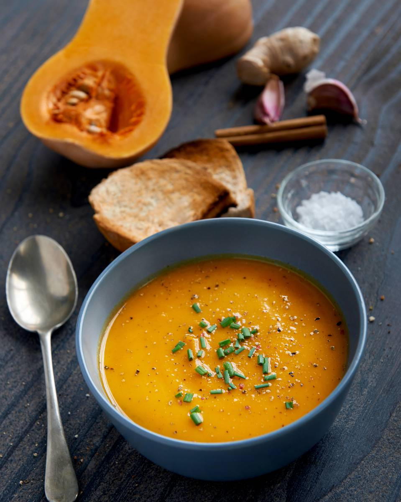

Butternut soup

Description
This recipe can perfectly be your side dish if you're going for the broccoli quiche ! This soup is really tasty, and is a sweet way to say goodbye to summer and a warm welcome to automn. Trust me, I'm an automn kinda girl. So yeah, it's a really easy and comforting soup.
You'll be happy to notice that you do not have to do any metric conversions here, YAY !
Ingredients
- 1 butternut squash
- 4 tomatoes
- 1 carrot
- 1 yellow onion
- 1 garlic clove
- Olive oil
- Salt
- Pepper
- Chili powder (sweet or spicy, do what you prefer)
- 1 stock cube
Steps
- Pre-heat your oven at 200°C.
- Peel and chop all of your vegetables and spread in an oven-fit dish.
- Smear your vegetables with some olive oil.
- Add some salt, pepper and chili.
- Bake for 30 minutes.
- Prepare a broth with your stock cube.
- When your vegetables are cooked, add some broth (adjust quantity for the consistence you like), and blend your mix until you have a nice soup.
- You just have to enjoy now !